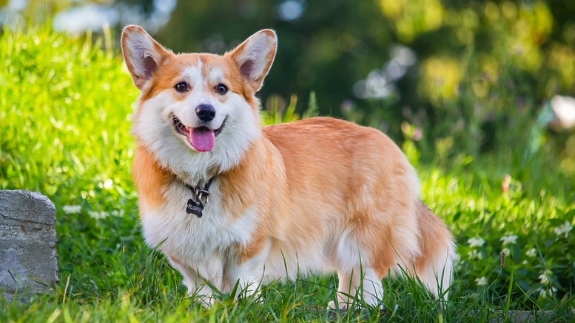
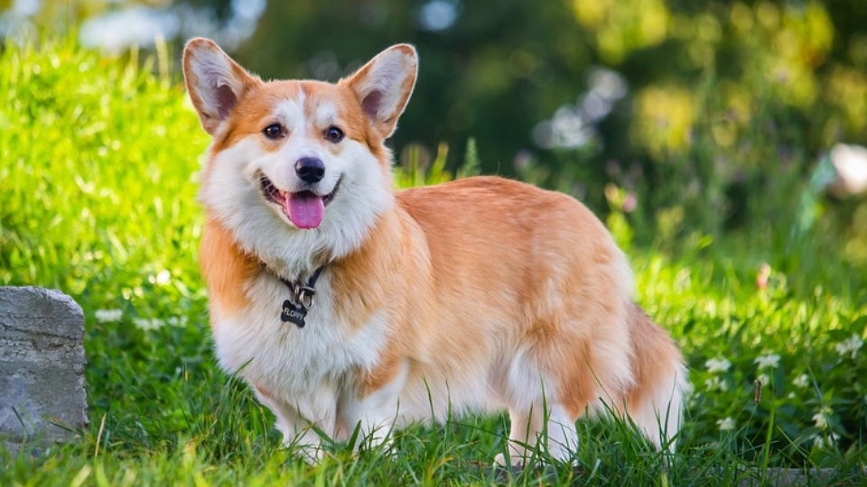

Вельш-корги
История данной породы
Вельш-корги пемброк – удивительная собака, любимая порода Ее Величества королевы Великобритании Елизаветы II, маленькая овчарка с большим и бесстрашным сердцем.
Это большая собака в маленьком теле. Такую характеристику чаще всего приходится слышать от владельцев этих собак. Удивительно, как в столь некрупном животном помещается столько любви, жизнерадостности, общительности и преданности человеку. А уж по уровню интеллекта и интуиции корги даст фору многим признанным помощникам человека из числа крупных служебных собак. Отличный характер, удивительные артистические способности, очаровательная внешность позволили представителям породы снискать любовь во многих странах мира. Все более популярной становится она и у нас.
 

Краткая информация
- Название породы: Вельш-корги пемброк
- Страна происхождения: Великобритания
- Время зарождения породы: X век
- Вес: 9-13 кг
- Рост (высота в холке): 25-30 см
- Продолжительность жизни: 9-12 лет
Основные моменты
- Корги – собака, идеально подходящая большой и дружной семье. Прекрасно чувствует себя как в условиях городской квартиры, так и в загородном жилье.
- Главные черты характера животного – жизнерадостность, доброжелательность и активность. При практически полном отсутствии агрессивности в поведении, корги – отважная собака с высокоразвитым интеллектом.
- Пемброк – порода собак, которые сильно нуждаются в человеческом обществе. Держать ее на улице, а уж тем более на привязи абсолютно недопустимо.
- Вельш-корги пемброк очень чутко воспринимает настроение своих хозяев и никогда не будет вам докучать некстати.
- Они очень активны и любят подвижные игры, хорошо дрессируются.
- Любовь корги к детям стала уже легендой. Абсолютно безо всякой опаски вы можете оставить с ним даже малыша – пемброк стоически вытерпит все его шалости.